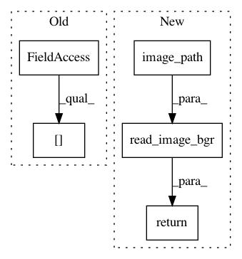

36d4f98bcb6cb717ea10feed7847916d9c2799a2,keras_retinanet/preprocessing/pascal_voc.py,PascalVocGenerator,load_image,#PascalVocGenerator#Any#,142
Before Change
def load_image(self, image_index):
Load an image at the image_index.
path = os.path.join(self.data_dir, "JPEGImages", self.image_names[image_index] + self.image_extension)
return read_image_bgr(path)
def __parse_annotation(self, element):
After Change
def load_image(self, image_index):
Load an image at the image_index.
return read_image_bgr(self.image_path(image_index))
def __parse_annotation(self, element):
Parse an annotation given an XML element.
In pattern: SUPERPATTERN
Frequency: 3
Non-data size: 5
Instances
Project Name: fizyr/keras-retinanet
Commit Name: 36d4f98bcb6cb717ea10feed7847916d9c2799a2
Time: 2019-10-31
Author: h.gaiser@fizyr.com
File Name: keras_retinanet/preprocessing/pascal_voc.py
Class Name: PascalVocGenerator
Method Name: load_image
Project Name: fizyr/keras-retinanet
Commit Name: 36d4f98bcb6cb717ea10feed7847916d9c2799a2
Time: 2019-10-31
Author: h.gaiser@fizyr.com
File Name: keras_retinanet/preprocessing/kitti.py
Class Name: KittiGenerator
Method Name: load_image
Project Name: fizyr/keras-retinanet
Commit Name: 2cf0c98e6d328d47a173868b03735eb17e2d5cc2
Time: 2017-11-30
Author: maarten@de-vri.es
File Name: keras_retinanet/preprocessing/csv_generator.py
Class Name: CSVGenerator
Method Name: load_image